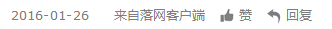

五条人：五条人可以把五条人给搞死是最好的
专访・补梦人的狂想摇滚・2017-09-07
仁科先到了落音乐空间，坐在吧台边跟工作人员说话，身穿黑色的皮衣，发型就跟演出时候一般。他要了一杯咖啡，我们一起等阿茂。
阿茂从大学城赶过来，他戴了眼镜，显得更斯文和帅气。“来了这里，我得喝点威士忌。”威士忌上桌以后，仁科说给他的咖啡加点，有味儿。
来自广东省汕尾市的五条人乐队，由阿茂、仁科和鼓手邓博宇组成，2016年12月发行第四张专辑《梦幻丽莎发廊》，并在深圳、厦门、 泉州、广州四城巡演。2017年3月24日从广东中山开始，五条人将带着这张新专辑走遍14个城市，为乐迷搞一场“梦幻丽莎发廊”的洗剪吹大趴。
多年前，阿茂和仁科摆地摊认识的一个朋友评价五条人，“本来五条人是要搞摇滚的，结果被活活逼成了民谣。”五条人自己也是这么想的， “不仅仅是民谣”也是外界对他们的一贯评价。新专辑《梦幻丽莎发廊》制作更加成熟，题材也开始扩展，五条人在尝试着更多“不那么五条人”的东西。
创作就是冒险：像拍电影一样创作音乐
仁科说，“创作就是冒险。”阿茂打趣地问，“你冒什么险呀？”
“创作就是冒险，你要去哪里并不是明确的，那样就很不好玩了。最好是做出一些东西，你自己都没想到的。”仁科一本正经地说道。
人乐队以海丰方言歌唱乡土民情而为乐迷所知，伴着生猛的江湖气，唱着“魔幻现实”的世情世相，五条人成为粉丝心中的“大神”。
说起《梦幻丽莎发廊》这张新专辑的创作初衷，原来五条人一开始是想在艺术空间中做展览。模仿发廊的摆设，让人面对梳妆台坐着， 戴着耳机听音乐，而梳妆台上的镜子就会有歌词或者影像。最疯狂的想法里，五条人甚至想着直接在发廊里面展览。但后来由于种种原因没做成，便有了这张专辑，而实体CD的封套就是一家发廊的模型。
（《梦幻丽莎发廊》照片 | 摄影师陈海双）
从《广东姑娘》到《梦幻丽莎发廊》，五条人音乐的题材不再局限于乡村旧闻，广州城事、痴心爱情、新闻故事都可以拿来创作和演唱。
谈到《初恋》和《热带》这两首唱“新闻”的歌，仁科觉得并不特别。“这样的新闻故事，我们经常在网络上看到。”仁科说，他还特别记得《初恋》那则新闻里面的图片，“一辆货车撞上了高架桥/卡在桥墩里面”， 当时，他就想起了维姆·文德斯《公路之王》里面的一幕，“一辆车从公路上高速向前开，冲到了河水里，而旁边另一个人正在刷牙。”这就是一则公路新闻，而整首歌就像一部公路电影。
比起《初恋》的新闻纪实，《热带》则有更多的创作虚构。新闻故事中，主角是追债者，但歌里面的主角是逃债者。住旅馆、核对福利彩票、掐死妓女、抢银行，故事显得十分戏剧性。为什么要核对福利彩票？ 仁科说，他本来希望给“刘德龙”创造奇迹，但想起买了几年六合彩都没中的家中老父，也觉得刘德龙不可能这么走运。“再捅死一个去银行取钱的人/抢了钱之后买了一辆摩托”，这又是贾樟柯《天注定》里面 的情节，然而五条人更现实，“刘德龙的钱根本买不起枪，我就给他配了一把刀。”
从海丰来到广州，阿茂感觉自己得到了自由。“到广州之后，你就会发现，大城市和县城是完全不一样的。”阿茂谈起了初来广州的趣事，“我跟我哥约好在购书中心碰个面，要去买磁带。我第一次坐公交车 （在广州），坐到下一个站了，后来我又走回来。”仁科第一次来广州是为了找阿茂，在天河客运站叫了一辆摩托，“摩托车穿过天河北路，我看到了很多高楼，整个城市是立体的，跟电视里面不一样，感觉 好像来到了未来。”这样的感受让仁科说起来也很激动，而这一幕电影式的情景也被写进新歌《石牌桥》里面。
《秧歌舞》这首新歌显得与众不同，不是充满画面感的音乐，而是更现实主义的诗歌。“我们要保持一个清醒的头脑/哪怕到了神志不清的那天”，说起这最后一句台词，仁科又想起了阿基·考里斯马基的电影 《没有过去的男人》。电影里面，男主角被暴打而失忆，另一个人带他去到酒吧，指着天上的海鸥、手边的烟灰缸想要帮助他恢复记忆，告诉他“永远别放弃，即使你神志不清的时候。”这句话听起来很鸡汤， 却是无家可归的男主角生存下去的信念。这一幕、这句话给人深刻印象，五条人又将其写进音乐中。
（仁科 | 摄影师泽健）
新专辑《梦幻丽莎画廊》的最后一首音乐是《楼房来四散起，路不见狗相连》，工地现场录音、笛声、吉他、噪音、摇滚、无歌词、杂乱无章，显然不再是简简单单的民谣了。谈起这首歌的创作， 阿茂和仁科都很开心，两个影迷说起了吉姆·贾木许的《离魂异客》，原来他们太过喜欢尼尔·杨即兴创作的电影原声了，“本来想把主题曲直接用在曲子里，但涉及版权，我们就自己弹了一段，毫无编排。” 而音乐最后戛然而止，仁科又说起大友良英2016年的现场专辑《SUN・RA・NEW》，里面的《Beat around the bush》也是这样突然结束。
如果直接评论《楼房来四散起，路不见狗相连》预示着五条人“转型”，那显然五条人要不高兴了。“以前，我们可以用渔歌戏曲来定义‘民谣’，但现在不行，因为世界打通了。音乐是融合很多东西的， 界限不用太清晰最好。”五条人的每次创作都有新的尝试，“民不民谣”从来不能限制他们。
面对质疑：五条人可以把五条人给搞死是最好的
现场一位粉丝直接问五条人，“签约摩登天空之后，你们是不是会唱更多的普通话歌？但在粉丝心中，唱方言好像才比较五条人。”就像“民谣”无法阻挠五条人对摇滚的热爱，“方言”在五条人心中也不 是唯一。“唱什么语言，是情节需要”，阿茂解释道。
如今在广州生活的人想必清楚，在广州跟人沟通，用的要不是普通话，要不是粤语，更多时候是普通话。“阿茂在《走鬼》里面唱了一句英语，真实故事里，那个‘走鬼’就真的是在地上写了一句英语呀， 这个时候你如果用海丰话唱反而是刻意。”这就像看电影一样，《阮玲玉》里面，联华影业的吴性栽、罗明佑、黎民伟三人分别用上海话、普通话、粤语说话，一起讨论如何捧红阮玲玉，显得有趣生动。 在新歌《很多很多》里面，海丰话、普通话、粤语、长沙话、包头话，会说的话都被五条人拿来唱。而早在《陈先生》这首歌里，五条人就用海丰话、粤语、客家话演绎了“陈先生”传奇的一生。
当然，阿茂也表示他们曾经想唱完全粤语的歌，但最终因为太困难而失败。闽南语、粤语由于音调多，总给人感觉好听，但说起来就更难。“海丰话是我们熟悉的，信手拈来。粤语有九个音，填词、 唱法都很难，没有办法。”阿茂还说，第一张专辑的时候，他们连海丰话都没唱准，但从《一些风景》之后，他们就能唱准98%甚至完全唱准了。
（茂涛 | 摄影师泽健）
货车司机、杀人凶手、性工作者、走鬼、道山靓仔、阿虎、阿炳耀、李阿伯、龙哥，五条人的音乐中有太多对小人物的关注，但实际上，五条人也不想被这样定义。“这些人就是我们熟悉的， 这些故事就是发生在我们身边的，时时刻刻，摆脱不了，我们只是不自觉地写下来。”仁科甚至说，将来五条人要写一首歌，里面没有任何人，“就像斯蒂芬·金想的一样，要写一部什么人都没有、但很恐怖的小说。”
也并非所有人都赞同“民谣乐队”五条人在音乐中书写现实故事，甚至有人质疑他们的创作损伤了民谣的诗意。但仁科更不同意了，他说，“有时候你觉得诗意的东西，我觉得有点恶心；我觉得诗意的东西， 你说这是什么鬼。”
为粉丝们津津乐道的五条人音乐，可能还有非常酷的《曹操你别怕》、《像将军一样喝酒》。这两首歌不仅融入古代轶事，还模仿了戏曲唱腔，编曲则偏摇滚，《像将军一样喝酒》更是拍了非常表现主 义的MV。“我们并没有去研究那种唱腔，我们只是在瞎玩、乱玩，突然觉得可以这样演绎，就这样唱了。”五条人之前接受采访还说过，《像将军一样喝酒》的创作灵感来自于饭桌上朋友的闲聊。
民谣还是摇滚，方言还是普通话，底层叙事还是谈情说爱，显然对于五条人来说都并非十分重要。“五条人可以把五条人给搞死是最好的”，仁科“不留情”地说了这么一句。五条人在音乐中天马行空， 音乐是什么种类，灵感从哪里来，主题又是什么，统统都不重要，五条人就是要在创作中寻找更多的自由和可能。
五条人寄语落网（LUO SPACE）粉丝：一杯鸡尾酒，忘掉所有的忧伤。
编辑/阿Yan
2017五条人新专辑《梦幻丽莎发廊》全国巡演


文章作者 |

|
版权声明 |
|
| 阿Yan |
「落网」专栏内文章，未经作者及「落网」许 可，不得转载、摘编。一经发现，自行承担全 部法律责任。 谢谢合作。 |
||
评论 ·8
最新评论
中哥还是很帅的啊，
你的声音，我在睡醒前的一秒就听到了！
